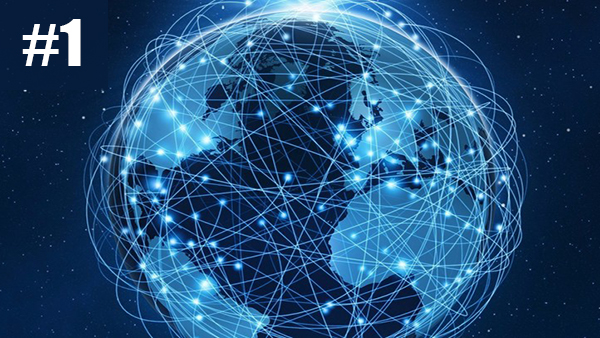
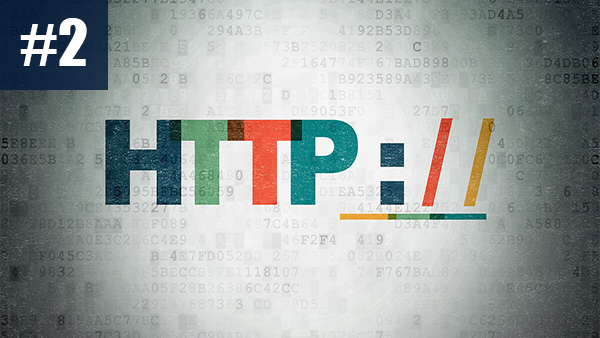
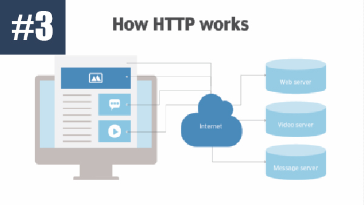
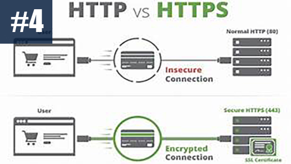
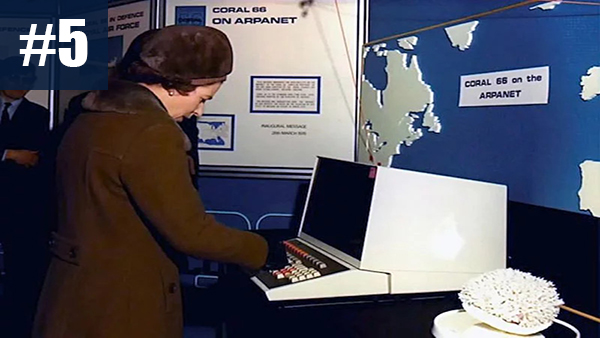
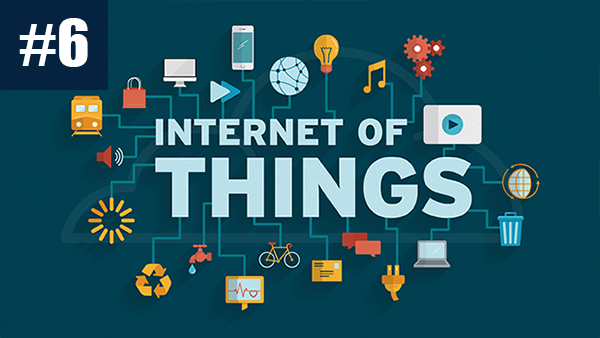

Hover over the photos for an interactive journey on what Tim understands the internet to be! Remember reading the content is best enjoyed in the voice of Morgan Freeman!

The internet is THE gateway to the world, it connects everyone to every part of the world with a click of something we have become comfortable clicking; a hyper-link. The internet allows us to do everything digitally through a vast network of computers and servers all connected by I.P. addressing.

These hyperlinks are a set of directions in the form of http, HyperText Transfer Protocol.

This protocol connects servers to end users. This protocol also allows amounts of data to be up/downloaded. This protocol handles a destination known as a website or web-address. These destinations can contain further information or data that can be accessed by both the serve and end user.

HTTP is an old and outdated protocol that is prone to various hacks and attacks. Over the last decade engineers have learned to encrypt data, making information passing across the internet safer, known as HTTPS. These encryptions make no sense to the human eye and mind. The information is packaged up then unpackaged at it's final destination.

FUN FACT: In 1976 Queen Elizabeth sent an email before it became a commonly used public means of communication.

New terminology has been introduced over the last decade many of our devices and daily life involve the internet. All of the devices and the actions of them are known as the "Internet of Things." (IOT) IOT allows us to start our cars from our phone, turn on the lights from the phone and have lights that come on without a manual switch when we enter a room.